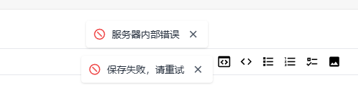

1.进后台点登录没反应，等半天才进去
2.保存文章时提示服务器内部错误，保存失败，请重试

错误日志：
2024/04/10 00:38:53 [error] 14891#0: *9198 recv() failed (104: Connection reset by peer) while reading response header from upstream, client: 175.167.145.102, server: ruoyuit.com, request: ＂GET /console/favicon.ico HTTP/2.0＂, upstream: ＂http://127.0.0.1:25813/console/favicon.ico＂, host: ＂ruoyuit.com＂, referrer: ＂https://ruoyuit.com/console/settings＂
2024/04/10 00:38:53 [error] 14891#0: *9198 recv() failed (104: Connection reset by peer) while reading response header from upstream, client: 175.167.145.102, server: ruoyuit.com, request: ＂GET /actuator/globalinfo HTTP/2.0＂, upstream: ＂http://127.0.0.1:25813/actuator/globalinfo＂, host: ＂ruoyuit.com＂, referrer: ＂https://ruoyuit.com/console/settings＂
2024/04/10 00:38:53 [error] 14891#0: *9198 connect() failed (111: Connection refused) while connecting to upstream, client: 175.167.145.102, server: ruoyuit.com, request: ＂GET /actuator/globalinfo HTTP/2.0＂, upstream: ＂http://127.0.0.1:25813/actuator/globalinfo＂, host: ＂ruoyuit.com＂, referrer: ＂https://ruoyuit.com/console/403＂
2024/04/10 00:38:53 [error] 14891#0: *9198 connect() failed (111: Connection refused) while connecting to upstream, client: 175.167.145.102, server: ruoyuit.com, request: ＂GET /upload/5bbeeb7d-7e82-453d-be69-464c314145c1.png HTTP/2.0＂, upstream: ＂http://127.0.0.1:25813/upload/5bbeeb7d-7e82-453d-be69-464c314145c1.png＂, host: ＂ruoyuit.com＂, referrer: ＂https://ruoyuit.com/console/403＂
2024/04/10 00:38:53 [error] 14891#0: *9198 connect() failed (111: Connection refused) while connecting to upstream, client: 175.167.145.102, server: ruoyuit.com, request: ＂GET /console/favicon.ico HTTP/2.0＂, upstream: ＂http://127.0.0.1:25813/console/favicon.ico＂, host: ＂ruoyuit.com＂, referrer: ＂https://ruoyuit.com/console/403＂
2024/04/10 00:38:53 [error] 14891#0: *9198 connect() failed (111: Connection refused) while connecting to upstream, client: 175.167.145.102, server: ruoyuit.com, request: ＂GET /console/favicon.ico HTTP/2.0＂, upstream: ＂http://127.0.0.1:25813/console/favicon.ico＂, host: ＂ruoyuit.com＂, referrer: ＂https://ruoyuit.com/console/403＂
2024/04/10 00:38:53 [error] 14891#0: *9198 connect() failed (111: Connection refused) while connecting to upstream, client: 175.167.145.102, server: ruoyuit.com, request: ＂GET /console/favicon.ico HTTP/2.0＂, upstream: ＂http://127.0.0.1:25813/console/favicon.ico＂, host: ＂ruoyuit.com＂, referrer: ＂https://ruoyuit.com/console/403＂
2024/04/10 00:38:54 [error] 14891#0: *9198 connect() failed (111: Connection refused) while connecting to upstream, client: 175.167.145.102, server: ruoyuit.com, request: ＂GET /actuator/globalinfo HTTP/2.0＂, upstream: ＂http://127.0.0.1:25813/actuator/globalinfo＂, host: ＂ruoyuit.com＂, referrer: ＂https://ruoyuit.com/console/403＂
2024/04/10 00:38:56 [error] 14891#0: *9198 connect() failed (111: Connection refused) while connecting to upstream, client: 175.167.145.102, server: ruoyuit.com, request: ＂GET /actuator/globalinfo HTTP/2.0＂, upstream: ＂http://127.0.0.1:25813/actuator/globalinfo＂, host: ＂ruoyuit.com＂, referrer: ＂https://ruoyuit.com/console/403＂
2024/04/10 00:38:57 [error] 14891#0: *9198 connect() failed (111: Connection refused) while connecting to upstream, client: 175.167.145.102, server: ruoyuit.com, request: ＂GET /console/403 HTTP/2.0＂, upstream: ＂http://127.0.0.1:25813/console/403＂, host: ＂ruoyuit.com＂, referrer: ＂https://ruoyuit.com/console/plugins＂
2024/04/10 00:38:57 [error] 14891#0: *9198 connect() failed (111: Connection refused) while connecting to upstream, client: 175.167.145.102, server: ruoyuit.com, request: ＂GET /favicon.ico HTTP/2.0＂, upstream: ＂http://127.0.0.1:25813/favicon.ico＂, host: ＂ruoyuit.com＂, referrer: ＂https://ruoyuit.com/console/403＂
2024/04/10 00:38:59 [error] 14891#0: *9198 connect() failed (111: Connection refused) while connecting to upstream, client: 175.167.145.102, server: ruoyuit.com, request: ＂GET /console/403 HTTP/2.0＂, upstream: ＂http://127.0.0.1:25813/console/403＂, host: ＂ruoyuit.com＂, referrer: ＂https://ruoyuit.com/console/plugins＂
2024/04/10 00:38:59 [error] 14891#0: *9198 connect() failed (111: Connection refused) while connecting to upstream, client: 175.167.145.102, server: ruoyuit.com, request: ＂GET /favicon.ico HTTP/2.0＂, upstream: ＂http://127.0.0.1:25813/favicon.ico＂, host: ＂ruoyuit.com＂, referrer: ＂https://ruoyuit.com/console/403＂
2024/04/10 00:39:02 [error] 14891#0: *9198 connect() failed (111: Connection refused) while connecting to upstream, client: 175.167.145.102, server: ruoyuit.com, request: ＂GET /console/403 HTTP/2.0＂, upstream: ＂http://127.0.0.1:25813/console/403＂, host: ＂ruoyuit.com＂, referrer: ＂https://ruoyuit.com/console/plugins＂
2024/04/10 00:39:02 [error] 14891#0: *9198 connect() failed (111: Connection refused) while connecting to upstream, client: 175.167.145.102, server: ruoyuit.com, request: ＂GET /favicon.ico HTTP/2.0＂, upstream: ＂http://127.0.0.1:25813/favicon.ico＂, host: ＂ruoyuit.com＂, referrer: ＂https://ruoyuit.com/console/403＂
2024/04/10 00:39:03 [error] 14891#0: *9198 connect() failed (111: Connection refused) while connecting to upstream, client: 175.167.145.102, server: ruoyuit.com, request: ＂GET /console/403 HTTP/2.0＂, upstream: ＂http://127.0.0.1:25813/console/403＂, host: ＂ruoyuit.com＂, referrer: ＂https://ruoyuit.com/console/plugins＂
2024/04/10 00:39:03 [error] 14891#0: *9198 connect() failed (111: Connection refused) while connecting to upstream, client: 175.167.145.102, server: ruoyuit.com, request: ＂GET /favicon.ico HTTP/2.0＂, upstream: ＂http://127.0.0.1:25813/favicon.ico＂, host: ＂ruoyuit.com＂, referrer: ＂https://ruoyuit.com/console/403＂
2024/04/10 01:01:49 [crit] 1855#0: *9694 SSL_do_handshake() failed (SSL: error:141CF06C:SSL routines:tls_parse_ctos_key_share:bad key share) while SSL handshaking, client: 223.113.128.222, server: 0.0.0.0:443